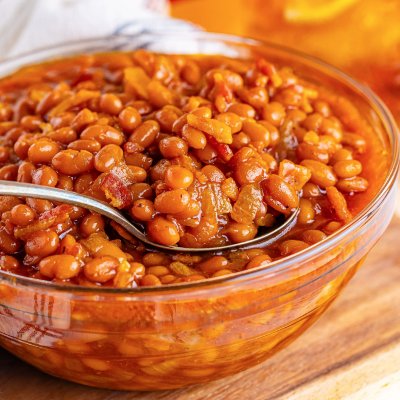

Baked Beans
Baked beans are pretty tasty

Here is a recipe for good baked beans
Baked Beans Recipe
Ingredients:
- Half pound chopped bacon
- 1 diced onion
- 2 (15 ounce) cans of baked beans
- Quarter cup brown sugar
- Quarter cup of ketchup
- Quarter cup of mustard
Directions:
- Cook bacon until brown
- Add onion and sauté until they begin to caramelize
- Add baked beans, brown sugar, ketchup, and mustard
- Mix together and reach a simmer for 5 minutes, stirring occasionally
- Serve with a hot dog and enjoy